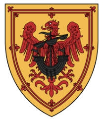

Antavla
1502239 Mary MacDonald

Far:
Angus Og MacDonald of the Isles (1272 - 1329)
Mor:
Agnes O'Cathan (1270? - )
Barn med
1502238 Earl William III of Ross, 4th Earl of Ross (- 1372)
Barn:
Euphemia of Ross (1345? - 1394)
Personhistoria
Årtal
Ålder
Händelse
1270?
Modern
3004479 Agnes O'Cathan
föds omkring 1270 Limavady, Scotland
[1]
1272
Fadern
1502232 Lord Angus Og MacDonald of the Isles
föds 1272 Scotland
[1]
1318?
Halvbrodern
751116 Lord John MacDonald of the Isles
föds omkring 1318 Finlaggan Castle, Isle of Islay, Scotland
[2]
1329
Fadern
1502232 Lord Angus Og MacDonald of the Isles
dör 1329 Scotland
[1]
1345?
Dottern
751119 Countess Euphemia of Ross
föds omkring 1345 Cromarty, Scotland
[3]
1365?
Barnbarnet
375559 Countesse Mariota Leslie of Ross
föds omkring 1365 Dundonald Castle, Ayrshire, Scotland
[3]
1372
Partnern
1502238 Earl William III of Ross, 4th Earl of Ross
dör 1372 Scotland
[1]
1387
Halvbrodern
751116 Lord John MacDonald of the Isles
dör 1387 Ardtornish Castle, Morvern, Argyll, Scotland
[2]
1394
Dottern
751119 Countess Euphemia of Ross
dör 1394-07-24 Pitmiddle, Scotland
[3]
1435
Barnbarnet
375559 Countesse Mariota Leslie of Ross
dör 1435 Scotland
[1]
Källor
[1]
comrade28
[2]
wikitree
[3]
Wikitree